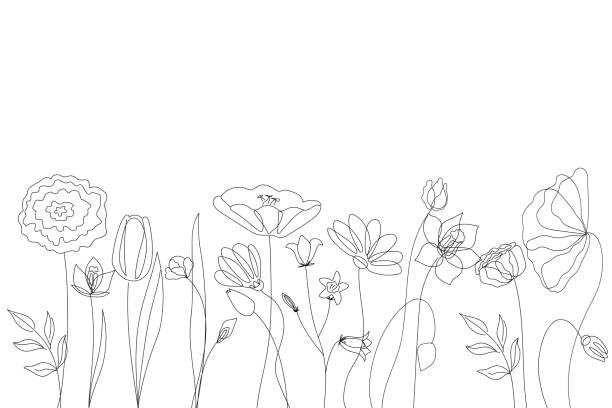

Describe the room you're sitting in
Cool wind on my back, borders on chilly, the slosh of cars going neither fast nor slow from the right and left behind me saving silence for only sometimes, the kind of light which is expansive and yet not bright, it fills up the room in a blue sort of way– that’s mostly due to the clouds, it’s been raining. The floors are soft but beg to be seen as hardwood, with bits of dirt and miscellanea blending into the straight streaks. The long table is in fact multiple tables, blue legs, covered in cream paper that oscillates like the surface of the ocean poorly pinned down by the tape of the continents at its edges. A collection of quarters lie in a pile, have been there since last week --untouched. Beige walls with gray stripes all around, screen at front with a black border. A printer the size of a person in the corner
